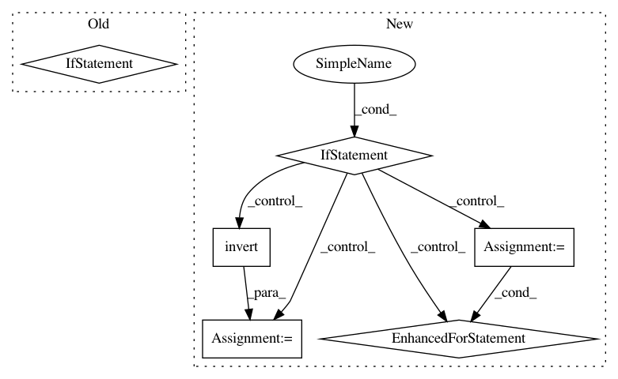

a09569767c6e477288e2df2b3507d37025a07c9a,bambi/models.py,Model,build,#Model#,82
Before Change
arrs.append(t.data)
X = np.concatenate(arrs + [self.y.data], axis=1)
num_na = np.isnan(X).any(1).sum()
if num_na:
msg = "%d rows were found contain at least one missing value." % num_na
if not self.dropna:
msg += "Please make sure the dataset contains no missing " \
"values. Alternatively, if you want rows with missing " \
"values to be automatically deleted in a list-wise " \
"manner (not recommended), please set dropna=True at " \
"model initialization."
raise ValueError(msg)
msg += " Automatically removing %d rows from the dataset." % num_na
warnings.warn(msg)
// compute information used to set the default priors
// X = fixed effects design matrix (excluding intercept/constant term)
// r2_x = 1 - 1/VIF for each x, i.e., R2 for predicting each x from all
// other x"s r2_y = R2 for predicting y from all x"s *other than* the
// current x.
// only compute these stats if there are multiple terms in the model
terms = [t for t in self.fixed_terms.values() if t.name != "Intercept"]
if len(self.fixed_terms) > 1:
After Change
arrs.append(t.data)
X = np.concatenate(arrs + [self.y.data], axis=1)
na_index = np.isnan(X).any(1)
if na_index.sum():
msg = "%d rows were found contain at least one missing value." % na_index.sum()
if not self.dropna:
msg += "Please make sure the dataset contains no missing " \
"values. Alternatively, if you want rows with missing " \
"values to be automatically deleted in a list-wise " \
"manner (not recommended), please set dropna=True at " \
"model initialization."
raise ValueError(msg)
// warn and then remove missing values
msg += " Automatically removing %d rows from the dataset." % na_index.sum()
warnings.warn(msg)
keeps = np.invert(na_index)
for t in self.fixed_terms.values():
t.data = t.data[keeps]
self.y.data = self.y.data[keeps]
// compute information used to set the default priors
// X = fixed effects design matrix (excluding intercept/constant term)
// r2_x = 1 - 1/VIF for each x, i.e., R2 for predicting each x from all
// other x"s r2_y = R2 for predicting y from all x"s *other than* the
// current x.
// only compute these stats if there are multiple terms in the model
terms = [t for t in self.fixed_terms.values() if t.name != "Intercept"]
if len(self.fixed_terms) > 1:
In pattern: SUPERPATTERN
Frequency: 3
Non-data size: 6
Instances
Project Name: bambinos/bambi
Commit Name: a09569767c6e477288e2df2b3507d37025a07c9a
Time: 2016-11-07
Author: jake.a.westfall@gmail.com
File Name: bambi/models.py
Class Name: Model
Method Name: build
Project Name: analysiscenter/batchflow
Commit Name: d381fb0787395076ecb8a3bd6984f52a16793fae
Time: 2018-03-27
Author: g.ivanov@analysiscenter.ru
File Name: dataset/batch_image.py
Class Name: ImagesBatch
Method Name: _invert_
Project Name: analysiscenter/batchflow
Commit Name: 49f4e83ae4323e032bdd232e466e59b4aeceb458
Time: 2018-03-28
Author: g.ivanov@analysiscenter.ru
File Name: dataset/batch_image.py
Class Name: ImagesBatch
Method Name: _invert_